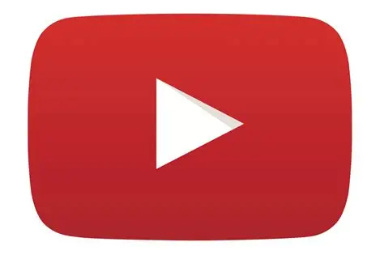
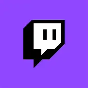

YouTube

Twitch
Livestreaming is becoming increasingly popular online.
You first need to pick your platform. The two most
popular currently are YouTube and Twitch. After you have
your account set up, you need to pick your broadcasting
software. The biggest two currently are OBS and
Streamlabs. They are both open source and free. After
configuring your sources, you can connect your account
and go live! You can even expand to more platforms!

Streamlabs
OBS